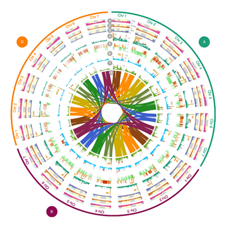

Thibault Leroy
Evolutionary biologist

Wheat, one of the most important food for humans, has been selectively bred across the globe for millennia. We recently explored the origins and patterns of genetic diversity in this hexaploid (AABBDD) species.
To do so, we used exome capture sequence data of a worldwide panel of 487 genotypes within the currently accessible wheat gene pool, including wild diploid and tetraploid relatives, domesticated tetraploid and hexaploid landraces, old cultivars and modern elite cultivars.
Comparing modern varieties (created since 1986) to founder material dating back to 1830 (i.e. landraces), we unveiled that modern wheat varieties showed an average loss of nucleotide diversity of 21.8% (33% on the subgenome A) suggesting that the last 2 centuries of breeding strongly reduced the within-species genetic diversity.
More broadly, we explored how 10,000 years of hybridization, selection, adaptation and plant breeding has shaped the genetic makeup of modern bread wheats.
More details: Pont, C., Leroy, T., Seidel, M. et al. Tracing the ancestry of modern bread wheats. Nature Genetics 51,905–911.
[Left: plot created using the wonderful R package Circlize]
I am a population geneticist, currently employed as a full-time university assistant at the department of Botany & Biodiversity research, University of Vienna, Austria. My research is focused on the study of evolutionary forces: gene flow, drift, mutation and selection and their relative importance in divergence and speciation. I have particularly studied fungal, plant and animal models for that purpose. My interests also include genomics - in its broader sense - and statistical methods for population genetics.
Contact:
Thibault (Tibo) Leroy -
Email
Department of Botany and Biodiversity Research
University of Vienna, Faculty of Life Sciences
Rennweg 14, A-1030 Vienna, Austria
Webpage Univ. Vienna